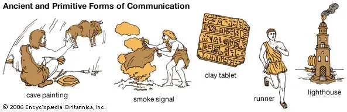
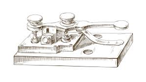
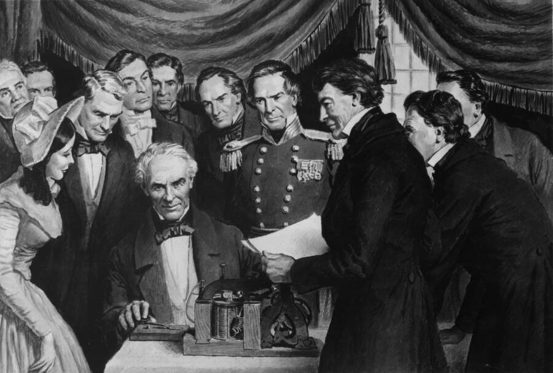
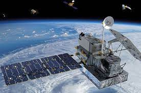
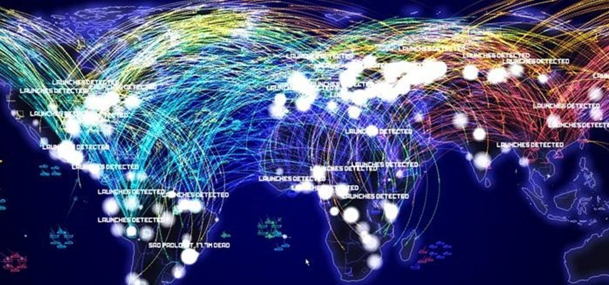

Timeline Perkembangan Telekomunikasi
Metode visual, pendengaran, dan metode tambahan (non-listrik)

Prasejarah: Api, suar, sinyal asap, drum, trompet
Abad ke-6 Sebelum Masehi: Surat
Abad ke-5 Sebelum Masehi: Pos merpati
Abad ke-4 Sebelum Masehi: Semaphore hidrolik
Abad ke-15 Masehi: Semaphore bendera maritim
1672: Telepon akustik (mekanis) eksperimental pertama
1790: Garis semaphore (telegraf optik)
1867: Lampu sinyal
1877: Fonograf akustik
1900: gambar optik
Sinyal listrik dasar


1838: Telegraf listrik.
1830s: Awal dari upaya untuk mengembangkan "telegrafi nirkabel"
1858: Kabel telegraf trans-Atlantik pertama
1876: Telepon.
1880: Telepon melalui fotofon berkas cahaya
Sinyal listrik dan elektronik tingkat lanjut


1896: Sistem telegrafi nirkabel praktis pertama yang berbasis Radio
1900: televisi pertama hanya menampilkan gambar hitam putih.
1927: televisi
1927: Layanan radio-telepon komersial pertama
1946: Layanan Telepon Seluler berkapasitas terbatas untuk mobil
1947: Transistor pertama yang berfungsi
1962: Satelit telekomunikasi komersial
1964: Telekomunikasi serat optik
1969: Jaringan komputer
1973: Telepon seluler (seluler) era modern pertama
1974: Internet
1981: Jaringan telepon seluler (seluler) pertama
1982: SMTP email
1998: Telepon genggam satelit bergerak
2003: VoIP Internet Telephony